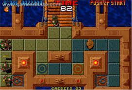
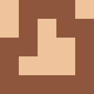
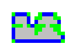
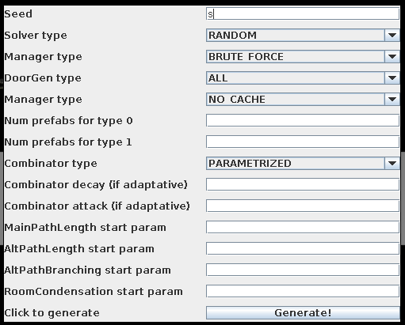
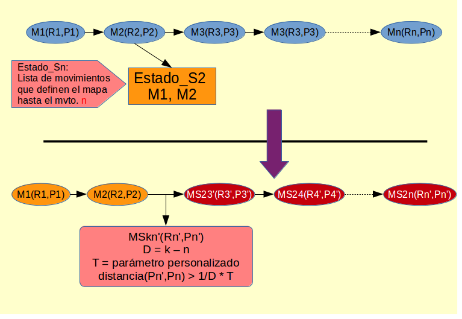

Creado por Alejandro Seguí Díaz
Los videojuegos son, a día de hoy, un tipo de mercado líder indiscutible a nivel internacional
Por ello, es bastante conveniente dedicar investigación a este campo
En muchos casos da lugar a desarrollo en otras áreas ajenas a la de los videojuegos
Muchos géneros de juegos requieren mapas en los que poder dar rienda suelta al jugador para recorrer, investigar y disfrutar
La elaboración de mapas consume recursos de horas/persona
Empresas grandes dedican un equipo completo a esta tarea
La aparición de equipos denominados indies, que se caracterizan por tener bajo presupuesto y personal, hace emerger necesidades relacionadas con cubrir la falta de recursos
Elaborar un sistema que genere los mapas necesarios para el desarrollo de un videojuego
Conseguimos un ahorro de recursos
Cada juego tiene sus propias reglas del mundo, y por ende, el sistema a construir debe adaptarse a dichas reglas
Este trabajo se ha elaborado en función de especificaciones impuestas por la empresa indie de videojuegos

Captura de Action Hollywood, publicado por TCH en 1995 para recreativas
Campo en constante desarrollo con varias subáreas:
Forma de programación declarativa que pretende resolver problemas de búsqueda (principalmente NP-hard)
Guarda similitud con programación lógica
Intentamos modelar nuestro problema a partir de restricciones
La representación física tanto del mapa como de las habitaciones, será una matriz de dos dimensiones
| $\begin{matrix} 0 & 1 & 1 & 1 & 0 \\ 0 & 1 & 0 & 1 & 1 \\ 1 & 1 & 0 & 0 & 1 \\ 1 & 0 & 0 & 0 & 1 \\ 1 & 1 & 1 & 1 & 1 \end{matrix}$ | $\leftrightarrow$ |  |
Cada habitación se representará como una matriz de dos dimensiones
Las habitaciones contendrán puertas que nos servirán para conectar pares de habitaciones
Debido a que las habitaciones pueden repetirse, se ha optado por una representación dividida en dos componentes:
También nos referiremos como clase o modelo.
Contiene la representación física de un modelo de habitación
Se precomputan y guardan las puertas potenciales de una habitación, ya que el cómputo de las mismas es costoso e innecesario, y de esta forma solo se realiza en la carga

Puertas potenciales mostradas como tiles azules
Permite elegir un subconjunto de todas las posibles puertas de un modelo de habitación a partir del conjunto de tiles precomputado en el modelo
Contiene información sobre una instancia de un modelo de habitación:
La solución está definida por:
Como se ha mencionado previamente, supondremos que el tamaño de la matriz es suficiente para contener todas las habitaciones
Recordemos que usaremos un método constructivo para obtener una solución
Antes de colocar una habitación, habremos realizado una serie de cómputos que requieren un tiempo de ejecución considerable
Así, podemos conservar el estado de un mapa mediante una lista de movimientos para construirlo, sin necesidad de realizar cómputos previos
De esta forma, incluimos una lista de movimientos para construir la solución
Los mapas debían generarse a partir de un set de habitaciones suministrado
Esto tiene su lógica en que, según el nivel, podemos querer que haya unas habitaciones u otras
No hay restricción en el tamaño del mapa, por lo que partiremos partiremos de un solar de tamaño suficiente para dar cabida a todas las habitaciones
Se ha procurado elaborar un sistema flexible que podamos modificar fácilmente en funcion de otros requerimentos, haciendo así posible la reutilización del software
Se ha empleado un método constructivo, es decir, iremos construyendo el mapa por pasos, basándonos en una búsqueda
En cada paso, se realizará lo que llamaremos un movimiento
Un movimiento está compuesto por:
La elección del movimiento entre todos los posibles, se realizará basándonos en una función de guía
Dicha función de guía, computará un valor asociado al movimiento basándonos en varios objetivos que definiremos más adelante
Algunos ejemplos de objetivos son:
Mapa GenerarMapa( List<Habitacion> habitaciones ) {
Mapa mapa = MapaVacio();
while( !habitaciones.isEmpty() ) {
// generamos los posibles movimientos según el estado actual del mapa
// y las habitaciones restantes
Movimiento[] movimientos = GenerarMovimientos( mapa, habitaciones );
// computamos el valor de la función guía para cada movimiento
float[] guiaMovimientos = ComputarFuncionGuia( movimientos );
// elegimos el movimiento con valor de función guía máximo
Movimiento prometedor = ExtraerPrometedor( movimientos, guiaMovimientos );
// insertamos la habitación en la coordenada indicada por el movimiento elegido
mapa.InsertarHabitacion( prometedor.habitacion, prometedor.posicion );
// eliminamos la habitación que se ha insertado de la lista
habitaciones.remove( movimiento.habitacion );
}
return mapa;
}
Una vez construido el sistema, es necesario configurar el generador con distintos parámetros
De esta forma, el desarrollador podrá adaptar los mapas generados a sus preferencias según el juego que vaya a construir
Como comprobaremos a continuación, hay variaciones de la parametrización que da como resultado generaciones muy parecidas
Se ha creado una interfaz gráfica que nos ayudará a configurar fácilmente los distintos parámetros

Configurable con parámetro fijo
Configurable con parámetro variable
Configurable con intervalo
Permitir al desarrollador elegir qué puertas se pueden elegir
El diseño actual del sistema no contempla backtracking, pero guarda la información necesaria para reconstruir un mapa
Guardando el estado del mapa generado en cualquier momento de la ejecución del sistema, podemos reanudarlo posteriormente a conveniencia
Para fomentar que la generación es distinta y que efectivamente se realice un camino distinto, se podría forzar a elegir una posición con una distancia mínima a la elegida en la versión anterior
